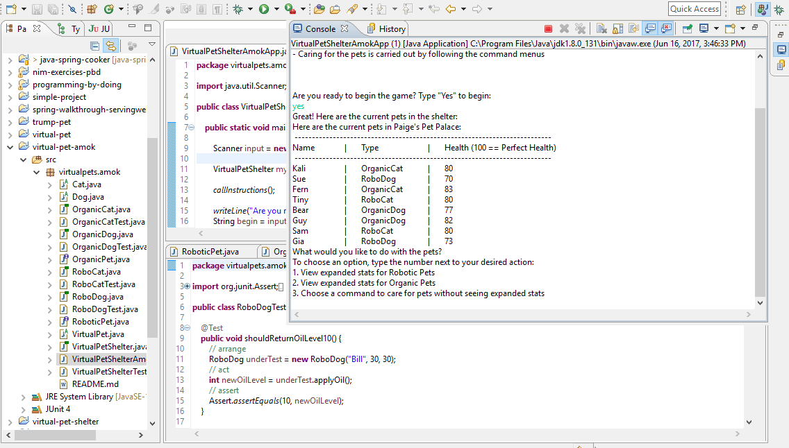
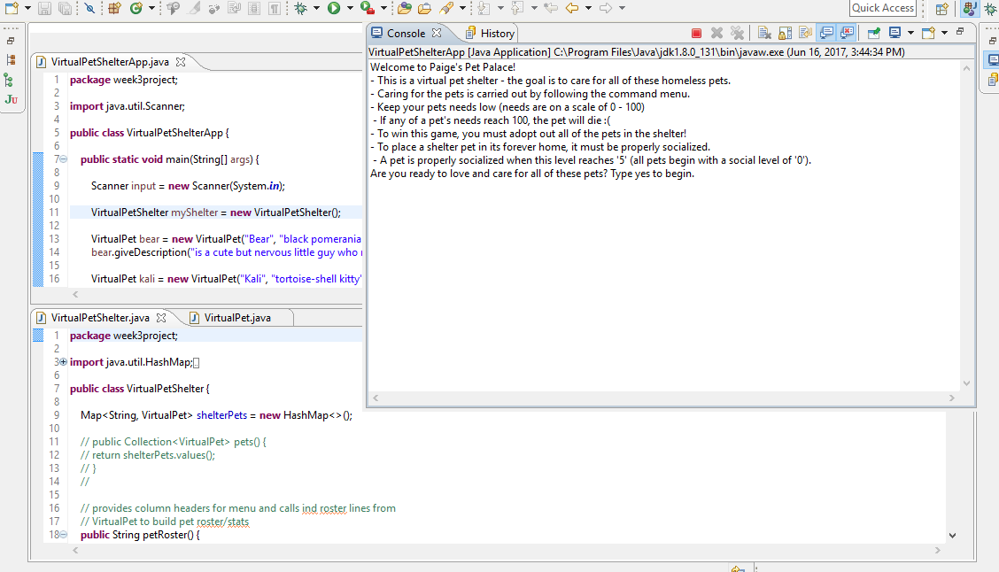
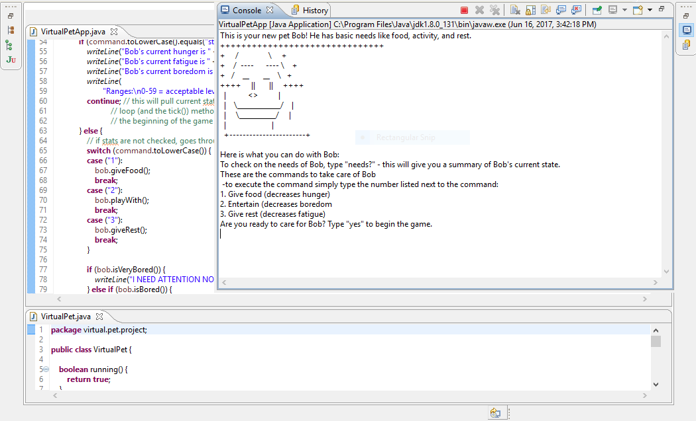

About Me
Bio
I am a current student at We Can Code IT and most interested in Java and TDD. My background is in botany and agriculture, and my analytical and scientific skills are an asset to my role as a developer. I am especially interested in the role of technology in sustainability, agriculture, and ecology. I am an Ohio native and currently reside in Columbus, OH.
Skills
- Java
- TDD
- Spring/Spring Boot
- HTML
- CSS
- JavaScript
- SQL Databases
Education
- B.A. - Ohio Wesleyan University - ΦBK
- We Can Code IT
Contact/Links
My Projects
Virtual Pet AMOK
This project simulates a virtual pet shelter and allows a user to care for various types of pet. Health is represented by various stats; the application relies on a simple game loop that adjusts the stats during gameplay. Inheritance and Interfaces are both used to create robotic and organic pets and cats and dogs of each type. "VirtualPet" functions as the supertype for all of the animals, and collections and associated methods are held in the "VirtualPetShelter" class.
- GitHub Repository »
- Java - TDD - Inheritance - Interfaces
- 
Virtual Pet Shelter
This project simulates a simpler version of a virtual pet shelter. User input is accepted to care for cats and dogs, and health is represented by basic stats. The goal of this game is to socialize all of the pets in order to adopt them out. Additionally, users can add custom pets to this shelter.
- GitHub Repository »
- Java
- 
Virtual Pet
Virtual Pet is a simple game that allows a user to care for one pet. The application runs on a simple game loop that advances the health of this pet, represented by simple stats such as hunger and boredom.
- GitHub Repository »
- Java
- 